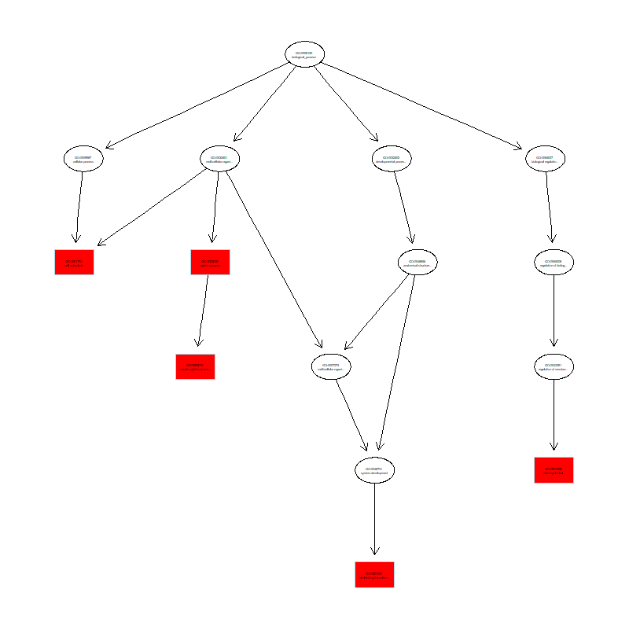
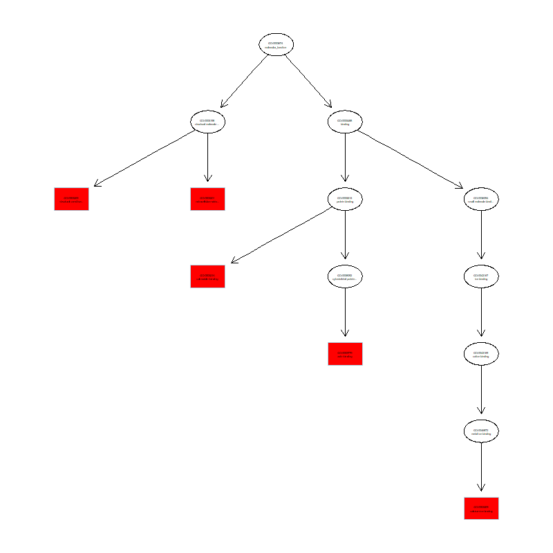
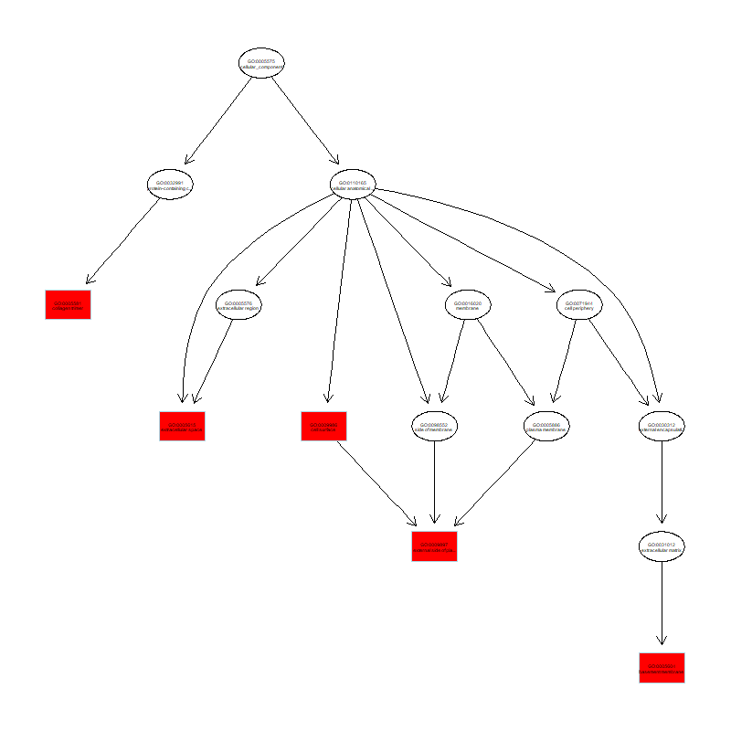

Gene Set Enrichment Analysis on c5 GO Gene Sets using EGSEA (C2_vs_C4)

Top GO Biological Process.
Download pdf file

Top GO Molecular Functions.
Download pdf file

Top GO Cellular Components.
Download pdf file
(Page generated on Mon Apr 20 13:28:18 2026 by
hwriter
)